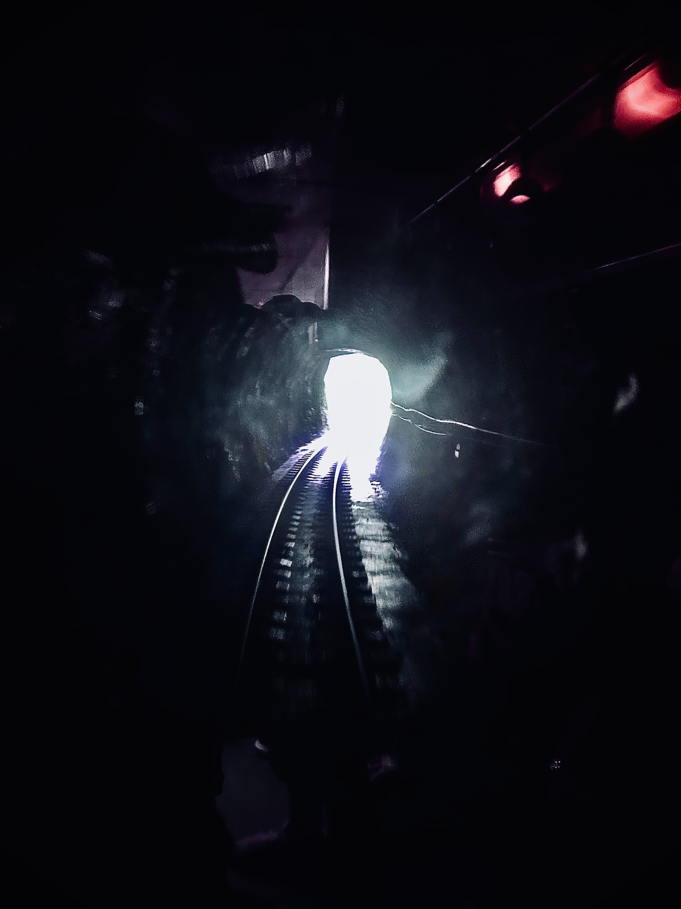
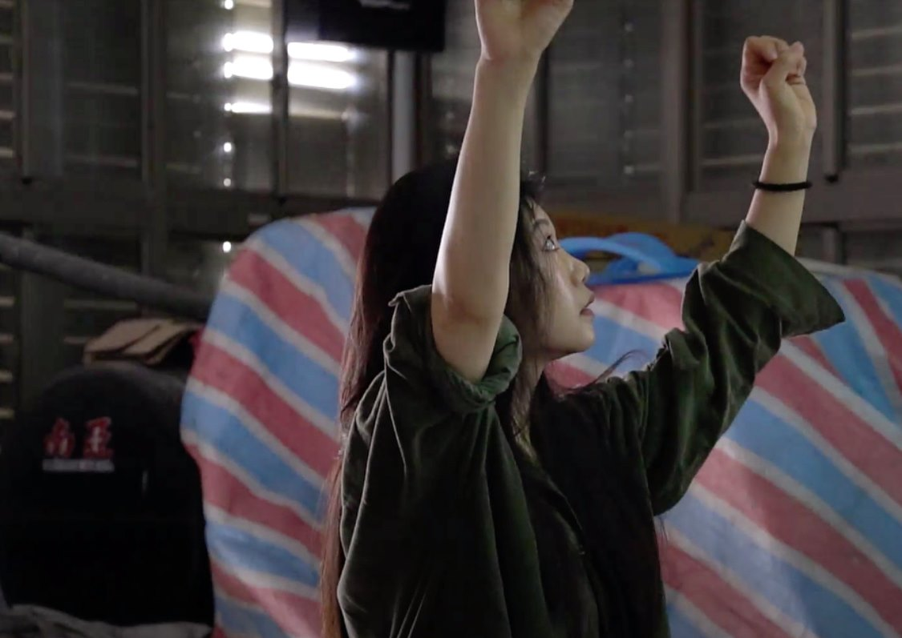
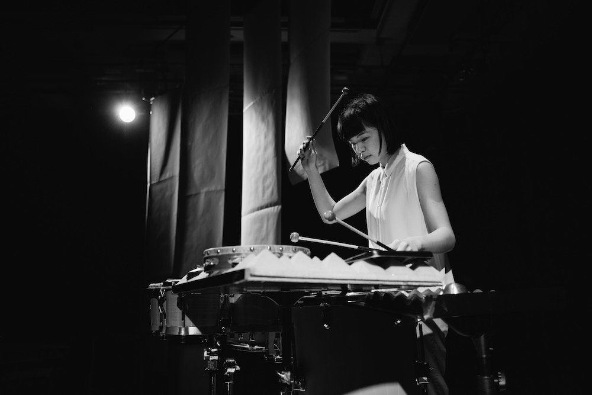

03無體之人
共感之境
週一至週日 10:00-20:00
眾聲嘈雜，刀一般的「話」破生命，記憶碎片隨風飄佚，始終無法靜落於地。演出引領民眾移動與聆聽，收集無色無味無從界定的聲音線索，試圖透過融聚多元的文化、歷史與環境拼圖，留下一些與存在相關的證據。

不二容戲劇工作室・陳品蓉
臺灣／現居臺北
從事劇場工作十餘年，與戲劇舞蹈表演者、聲音、視覺等各領域藝術工作者合作，作品以社會集錦的角度，呈現出個人之美，近年作品包括〈剩人〉、〈一個人的廟會〉。以〈剩人〉、〈我顫抖〉獲台新藝術獎提名，並以〈我顫抖〉入選文化新秀。

周心瑀
臺灣／現居維也納
2022-2023年赴維也納應用藝術大學跨媒體藝術交換。以日常聲作為創作素材，透過聲音與圖像的實驗方式，讓空間更具開放的想像與可能。